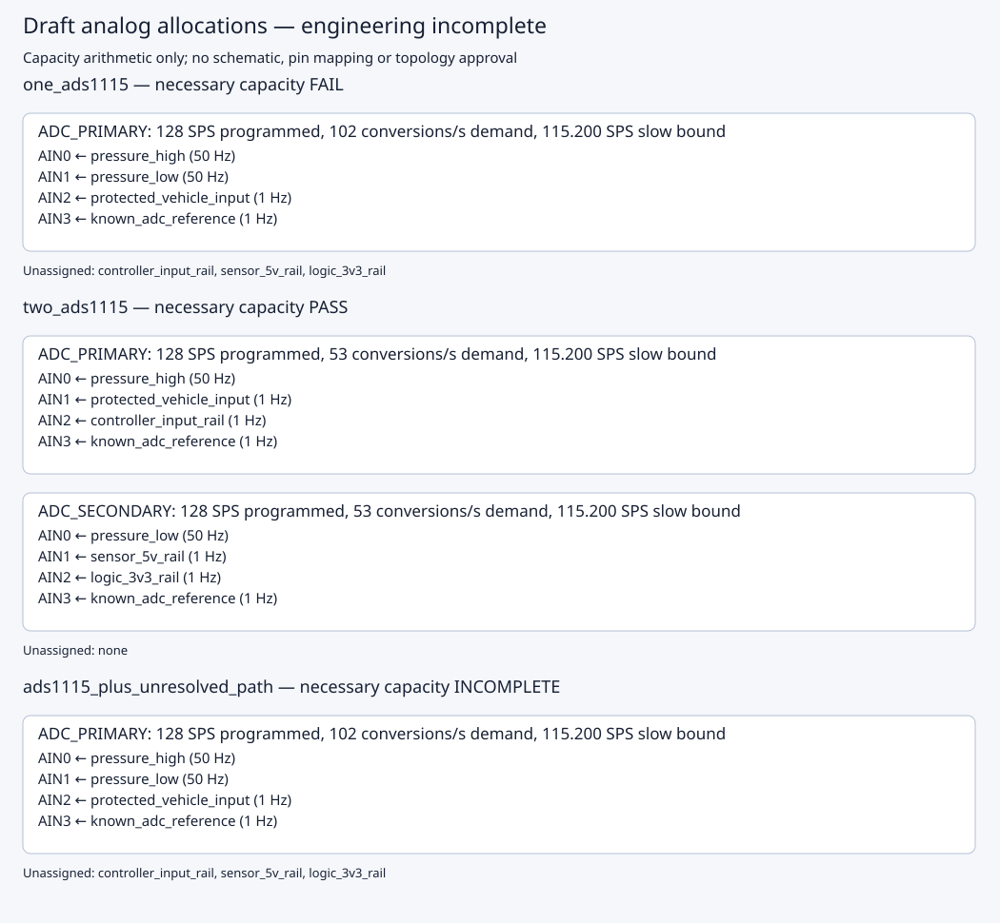

Engineering INCOMPLETE · Release BLOCKED

Readable report · Machine report · Artifact manifest
# Draft A/C analog acquisition plan Engineering: **INCOMPLETE**. Release: **BLOCKED**. No product topology selected. Source signals: **7**. Minimum source conversions/s: **105**. The candidate checks below cover necessary channel and shared conversion bounds only. All timing, electrical and reference-fanout qualification remains INCOMPLETE. ## one\_ads1115 Evaluate one ADS1115 for all seven required analog signals, with no external MUX or controller\-ADC route\. The nominal rate is a draft setting, not an implemented schedule\. Necessary capacity: **FAIL**. Complete known assignment: **False**. Required input connections under the draft reference policy: **7**; known inputs: **4**. Conversions/s with per-ADC references if assigned to known ADCs: **105**. ### ADC\_PRIMARY Draft bus DRAFT\_I2C\_BUS, ADDR -> GND, 7-bit address 72 (0x48). Programmed 128 SPS; slow-rate bound 115.200 SPS; assigned demand 102 conversions/s. - AIN0: pressure\_high, 50 Hz - AIN1: pressure\_low, 50 Hz - AIN2: protected\_vehicle\_input, 1 Hz - AIN3: known\_adc\_reference, 1 Hz Unassigned observations: controller\_input\_rail, sensor\_5v\_rail, logic\_3v3\_rail. Unresolved paths: none. - **KNOWN_INPUT_CAPACITY_EXCEEDED**: Known ADC inputs cannot hold all observations and per\-ADC references\. ## two\_ads1115 Explore two separate conversion engines with distinct address\-pin connections and one external\-reference input on each ADC\. This is an unselected proposal; exact parts, supplies, conditioning, fanout, controller pins and timing remain unresolved\. Necessary capacity: **PASS**. Complete known assignment: **True**. Required input connections under the draft reference policy: **8**; known inputs: **8**. Conversions/s with per-ADC references if assigned to known ADCs: **106**. ### ADC\_PRIMARY Draft bus DRAFT\_I2C\_BUS, ADDR -> GND, 7-bit address 72 (0x48). Programmed 128 SPS; slow-rate bound 115.200 SPS; assigned demand 53 conversions/s. - AIN0: pressure\_high, 50 Hz - AIN1: protected\_vehicle\_input, 1 Hz - AIN2: controller\_input\_rail, 1 Hz - AIN3: known\_adc\_reference, 1 Hz ### ADC\_SECONDARY Draft bus DRAFT\_I2C\_BUS, ADDR -> VDD, 7-bit address 73 (0x49). Programmed 128 SPS; slow-rate bound 115.200 SPS; assigned demand 53 conversions/s. - AIN0: pressure\_low, 50 Hz - AIN1: sensor\_5v\_rail, 1 Hz - AIN2: logic\_3v3\_rail, 1 Hz - AIN3: known\_adc\_reference, 1 Hz Unassigned observations: none. Unresolved paths: none. ## ads1115\_plus\_unresolved\_path Keep the original ADS1115 plus another measurement path as an open alternative\. A controller ADC needs verified board/GPIO/accuracy evidence; an external MUX needs a reviewed topology and settling/protection evidence\. Neither path has a declared usable capacity here\. Necessary capacity: **INCOMPLETE**. Complete known assignment: **False**. Required input connections under the draft reference policy: **7**; known inputs: **4**. Conversions/s with per-ADC references if assigned to known ADCs: **105**. ### ADC\_PRIMARY Draft bus DRAFT\_I2C\_BUS, ADDR -> GND, 7-bit address 72 (0x48). Programmed 128 SPS; slow-rate bound 115.200 SPS; assigned demand 102 conversions/s. - AIN0: pressure\_high, 50 Hz - AIN1: pressure\_low, 50 Hz - AIN2: protected\_vehicle\_input, 1 Hz - AIN3: known\_adc\_reference, 1 Hz Unassigned observations: controller\_input\_rail, sensor\_5v\_rail, logic\_3v3\_rail. Unresolved paths: ADDITIONAL\_ANALOG\_PATH. - **KNOWN_INPUT_CAPACITY_EXCEEDED**: Known ADC inputs cannot hold all observations and per\-ADC references\. ## Qualification still required - The profile contains manually transcribed manufacturer facts; hashes establish bytes, not independent engineering approval. - Necessary input and conversion-count bounds exclude I2C, software, start-up, MUX/analog settling, filtering, fault scans and deadline/jitter overhead. - The per-ADC reference allocation is an explicit draft policy. Its source, fanout, loading, protection and accuracy are unresolved. - Assignments are draft single-ended input proposals. No controller GPIO, exact ordered part, conditioning network, nets or physical layout is selected. - An unresolved analog path has no assumed channels or conversion capacity. Temperature, logging and other subsystems are outside this acquisition profile. - A local capacity PASS does not implement a schedule, qualify a circuit, resolve a BoardSpec contract or authorize schematic creation. Remaining BoardSpec blockers: **14**. [Draft allocation diagram](allocation.svg) · [Machine report](review.json) · [Input/artifact manifest](manifest.json) Report SHA-256: 8db5736b6c2af966668c5ca2d181f62b5936639510de16327dbf763b559f73a7